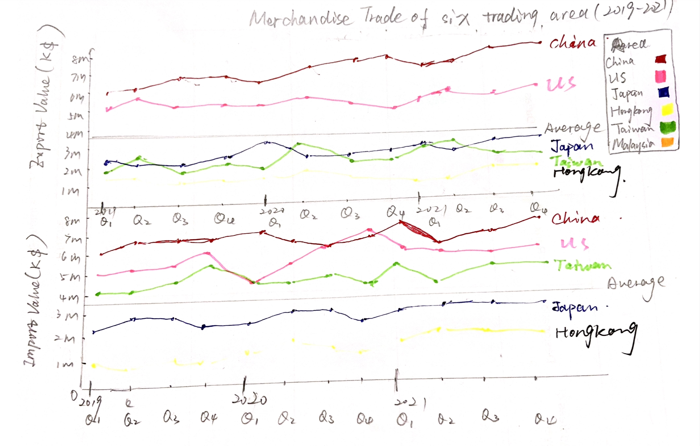

DataViz Makeover - 1
The DataViz Makeover-1 report aims to optimize the original graph by using the data from Department of Statistics in Singapore.
1. The original data
2. Clarity
In this section, the origincal data will be implement makeover based on clarity dimension.
| Index | Critiques | Improvement |
|---|---|---|
| 1 | The title does not clarify that the Top-6 countries are extracted based on which benchmark, the number of import trading or export trading? Which period of time? | Create a subtitle to give a brief explanation. |
| 2 | The title shows the period of time is from 2019 to 2020 whereas the X-axis in graph is from 2019 to 2021. | Modify the period in title (2019-2021) |
| 3 | The graphs plot the line year to year, but the legend is written as ‘month of period’, which is absolutely wrong. | Change the legend of x-axis as ‘year of period’. |
| 4 | The x-axis in Japan graph only gives one mark of year (2020), 2019 and 2021 are removed from x-axis. | Include 2019 and 2021 in X-axis. |
| 5 | Name of category on the right is ‘Measure name’, which is not very clear | Rename the title of category as ‘Trading type’ |
3. Aesthentics
In this section, the origincal data will be implement makeover based on Aesthentics dimension.
| Index | Critiques | Improvement |
|---|---|---|
| 1 | The shading would make people unable to differentiate which line is export and which line is import. | Make the area under the line blank rather than filled them up with color. |
| 2 | The unit length of Y-axis is different from one to another, which is not clear for comparison. | Standardize the unit length of Y-axis (for example 1 million) |
| 3 | Each graph has different width, which looks inconsistent. It is also difficult to compare. | Set the graphs to keep the same width. |
| 4 | The 6 graph is sorted in a random order instead of a logical way, which is not very suitable for people to compare. | Use one of dimension to sort them. |
| 5 | The x-axis marks are removed which is difficult to detect a clear boundary between each year. | Mark each year in x-axis. |
4. Porposed Design

4.1 The advantages of sketch
- Split the export value and import value up for separate comparison.
- Include quarter marks in x-axis to have a long x-axis so that people can see the detailed changes of value over time.
- Include the average value for comparison.
5. Detail steps of visualization
5.1 Data preprocessing in excel
There are several rows on top of table which is unnecessary in data, so I removed them from excel. Since we need to compare the trading value based on countries instead of region. The first 6 rows show total value based on continents, so I removed them also.
5.2 Data preprocessing in Tableau
- Import two tables of data one by one into Tableau, remove the columns not in 2019-2021.
- Select all remaining years in the data, right click and select ‘Pivot’.
- Rename the field name
5.3 Line graph visualization
Once two tables are done with the 2 steps above, import them into tableau.
- Data blending
Blend 2 data by linking Data relationship and country relationship between two tables. A sign will appear next to the linked column in primary data.
- Line graph plot
Drag ‘Date’ into column and sum (import value) into row , then drag the sum (export value) into row as well.
- Apply filter
Drag either one of countries in two data source into the filter position (since two country columns are linked). Select particular 6 country in the list.
- Apply color
Drag countries into ‘color’ in the marks pane, since there are lots of countries in the column, so we need to filter first then add. Check the particular 6 countries, then select ok. The initial colors in the filter are shown like the picture below. I add a reference line in each graph to determine the hue of line:
- The countries whose export number is more than 10M will be set as red hue.
- The countries whose export number is less than 10M will set as blue hue. Then the colors are set like the picture below. To make the break line clear, I also add a ink line in the graph which in just equal to 10M.
- Rename titles and axis.
Title was changed as ‘Merchandise Trade of Six Countries, 2019-2020’, Y-axis title was changed as ‘Import Value (1000 $)’ and ‘Export Value (1000$)’, X-axis title was removed.
5.4 Table visualisation
- Create calculation fields
For better comparison, I created a new calculation field named “2019 import value” to only include the import happened in 2019.In this case, I just demonstrate the import value, I did the same calculation for export value as well. Repeat the same “if-then” function to create other column named “2020 import value”.
- Create the table
-
Drag the countries into the row, drag the year of Date into the column.
-
Filter the countries to only include the six countries, and filter Date to only include 2019 and 2020.
-
Drag the import value into the color and also drag it into the text in mark pane.
-
To make the hue of dashboard look consistent, I just set the import table as Red background and set the export table as Blue background.
-
Modify the number unit as M(million), after all steps below, the table is shown as the picture below: One thing worth mentioning is that I just demonstrate import table step by step, I also created the same type of table for export table as well, and the table is shown as the picture below:
5.5 Create growth table
To purly see the trend between 2019 and 2020 (up/down), I also created a table to see the growth by year.
- Create several new calculation fields
Create a new calculation field named “growh %” to see the changes of import value from 2019 to 2020. Then create another calculation field named “up/dowm” to mark whether the growth is positive or negative.
- Created the growth table
-
Drag countries into the row, filter countries to only include six countries.
-
Drag “growth %” to the text, drag “up/down” into the color area as well as shape area in the mark pane.
-
To make people understand the up/down trend, set the “up” as upwards trangle and “down” as downward triangle.
-
Similarly, change the color as red and green respectively. After all steps above, the table is shown as the picture below:
Drag countries into rows and drag import value into rows, change calculation as sum().
- Change the way of showcase to ‘highlight table’.
- Change the value shown as percentage
Right click on the sum (import value) > quick table calculation > percent of total.
- Rename header and repeat the same step to create import value table.
5.6 Dashboard visualization
- Add sheets
Drag line graph into the left and drag two tables int the right.
- Add source
Using Object > Text > drag text to the bottom, then add the source and the raw data link.
The final dashboard would be shown like the picture below.
6. Insights from new graph
- Japan and Taiwan have the similar flat trend in terms of Export value changes over time.
- Mainland China has the most value in both export and import most of time.
- Hong Kong has a very large number of export value during 2 years whereas, in comparison to import value, it has the least import value.
- For United States, we can see a downward trend both in import and export.